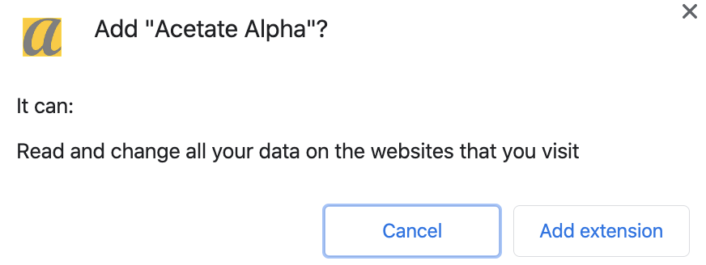
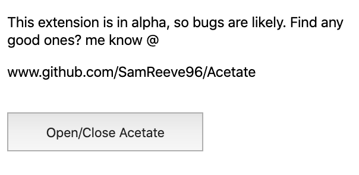
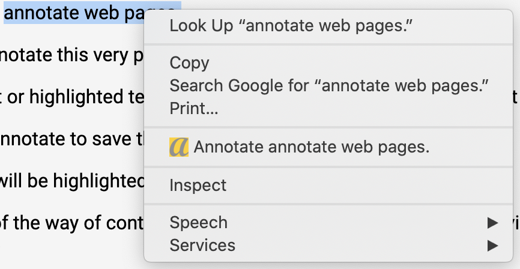
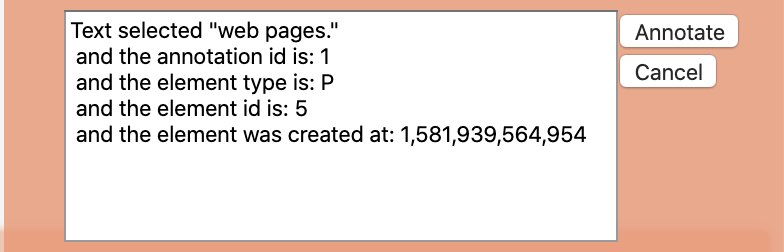
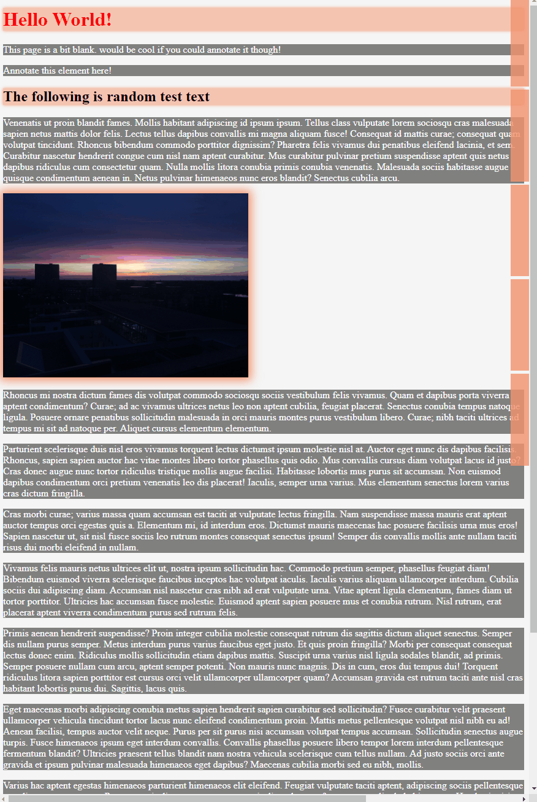
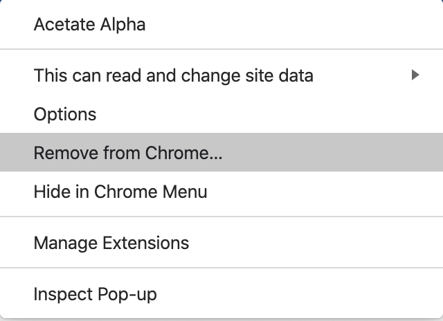

Welcome to the Acetate Alpha test!
Thanks for helping me out!
(Note this does require a Chromium browser e.g. Chrome or brave)
Setup
- Download the Acetate alpha extension from the google store here
- Once it’s installed it will ask for some permissions, these are required for the extension to run. Data is only stored in chrome sync storage in the alpha version, so only you can see it (the data is also removed when the extension is uninstalled)

- The extension will automatically load the tutorial page, close this tab, you wont need it
Basics
Here are some tips to get to grips with Acetate!
- Before you can annotate a webpage, Acetate needs to be active, by default it is off on every page. To do this go over the Acetate ‘a’ icon in the top right of the browser window and open the popup, then click the ‘Open/Close Acetate’ button once.

- Now Acetate is active! To begin annotating a page, simply right click on a page element and select ‘Annotate’ Note: you can also highlight text and that text will be recorded in the annotation data

- When a new annotation is made, a card will pop up on the right-hand side of the screen, you just need to click ‘Annotate’ to save it

- As soon as you make annotations, refresh the page and the annotations will load back!
- If you want to see an annotation card you can view it by:
- Hovering over the card on the right of the screen
- Hovering over the corresponding element
- Or pressing ‘o’ on your keyboard to make all cards visible*

Known Issues
Whilst waiting for the Alpha to be approved, I’ve found some bugs with the alpha that I’ve not been able to squash just yet:
- Attempting to annotate a page without Acetate being active kills the instance of that page, it is recommended to be sure Acetate is active before attempting to annotate
- The ‘o’ button will slide out all the annotation cards if pressed whilst inputting text, this will be updated to a proper shortcut soon
- Element auditing has a few bugs to solve, so highlighted elements may not always be correct after reloading a page
- Annotation cards appear at the top of the page / beneath the latest card, so if the first annotation you make is at the bottom of the page, you'll need tos scroll up to see it
- Definitely more to find!
Testing
The test will consist of you visiting 3 sites, two of which are listed below, the third is your choice!
For each of the 3 sites:
- Visit the site and activate Acetate
- Comment on at least one piece of text and an image
- Reload the page, re-activate Acetate
- Site one - BBC News
- Site two - Eurogamer article
Feedback
Once you've completed the test, please can you provide some feedback via this google form.
If you spotted any bugs, or had a technical issue with Acetate, please get in touch on my Github repo: Acetate
Finally...
To remove the extension, just right click the Acetate "a" icon in the top right and select 'Remove from Chrome'

Thank you for your time, Acetate is still far from a finished project and I’d certainly love to see it get there.
Samuel.